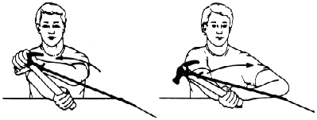

PREVENTIVE & REHABILITATIVE EXERCISES
FOR THE SHOULDER & ELBOW |
TABLE OF CONTENTS
PREVENTION
Year Round Conditioning and Post Injury Maintenance
Essential to ball players is an off season program and year round conditioning. Players
who are injured during spring training as a result of poor conditioning come to the
realization that they cannot expect to get in shape right before spring training and throw
well without having a high risk of injury. Players should progress back gradually so that
they are not throwing "too hard, too fast, too far, or too quickly",
predisposing themselves to injury. Off season conditioning programs address conditioning,
strength training, and flexibility. It is of utmost importance that a structured program
be followed. A year round program helps to prevent injury and a maintenance program helps
to prevent reoccurrence.
Flexibility and stability of the shoulder is paramount in the dynamic throwing act. The
joint capsule must allow range of motion and flexibility in order to provide a fluid
delivery. Flexibility exercises should be performed before and after throwing and should
also be performed in conjunction with any weight training program. A good balance between
the anterior and posterior musculature must exist so that the shoulder will not be
predisposed to injury. In addition to any additional strengthening that a player may
perform, special emphasis must be given to the posterior musculature (i.e. the rotator
cuff).
REHABILITATION
Rehabilitative Goals
The goal of any rehabilitation program is that of returning to an optimal pre-injury
status. The components of a good rehabilitation program are directed towards achieving
full range of motion, improving flexibility, increasing strength, and regaining power,
coordination, endurance, accuracy, and timing for the activity. The excessive demand and
stress of throwing may lead to a spectrum of injuries ranging from minimum to maximum
severity of pathology. Mild injuries with resultant inflammatory response and symptomatic
pain may lead to a moderate or severe chronic problem if continued over demand is placed
upon the shoulder without appropriate treatment in the early phase of injury. Mild overuse
injuries, such as musculature strains, tendinitis, or bursitis, respond well to a period
of rest from activity: conservative measures and modality treatments, such as ice,
electrical muscle stimulation, moist heat, ultrasound, transcutaneous electrical nerve
stimulation, anti-inflammatories, exercise, and a gradual return to activity. If a
continued overuse problem becomes chronic and severe, a cycle may result of increased pain
and inflammation leading to shoulder tightness, muscular weakness and imbalance with
additional problems of compensation and activity which increases abnormal biomechanics.
Loss of shoulder and elbow flexibility results from muscle tenderness, tightness,
and/or capsular tightness. Inflexibility of the glenohumeral joint of the injured throwing
shoulder can be assessed in positions of horizontal adduction and combined adduction and
external rotation with the scapula stabilized. With loss of flexibility, movement is tight
at the end range with a deficit of motion as compared to the uninjured extremity. A
thrower needs full range of motion with good flexibility in movement positions.
Goals of increasing strength and endurance in integrated muscle action of the athlete
are accomplished by a high repetition - low weight program. Five sets of 10
repetitions are performed of each specific exercise outlined for the individual. Weight
progression and rehabilitation of the injured throwing arm is initially a gradual increase
beginning without weight on active movements and increasing from one to five pounds in
weight. The exercises are performed in a concentric/eccentric manner with a slow lifting
and a slow lowering technique. The strength/endurance exercises are performed three times
daily. Heavier weights and weight training machines, which may be used in strength
programs for the normal shoulder, should not be used in the case of the injured shoulder
until full range of motion, flexibility, strength, and throwing capabilities have been
achieved.
SHOULDER REHABILITATION
PROGRAM
*To be performed 3 times daily.
RANGE OF MOTION EXERCISES
1. Circumduction/Pendulum Swings:
Lean over table, supporting body with uninvolved arm. Let involved arm hang straight down
in a relaxed position. Gently swing arm in circles clockwise, counter-clockwise; then in a
pendulum motion forward and backward, and side-to-side. Repeat 1 set of 10 repetitions
each, progressing to 5 sets of 10 repetitions each as tolerable. |
2. Supine Flexion:
Lie on back. Grip T-bar in both hands and with arms straight, raise both arms overhead as
far as possible. Hold for 5 seconds. Return to starting position. Repeat 10-15 times. |
3. Supine Abduction:
Lie on back with involved arm at side of body. Straighten involved arm and rotate hand
outward as far as possible. Slide arm along bed or floor, moving arm away from side as far
as possible. Use T-bar or hand to help pull. Hold for 5 seconds. Return to starting
position. Repeat 10-15 times. |
4. Supine External Rotation:
A. Lie on back with involved arm out to side of body at 90° and elbow bent at 90°. Grip
T-bar in hand of involved arm and keep elbow in fixed position, use opposite arm to push
involved arm into external rotation. Hold for 5 seconds. Return to starting position.
Repeat 10-15 times. |
| B. As
shoulder abduction range of motion progresses, perform external rotation stretch at 135°
and full abduction. Repeat 10-15 times. |
5. Supine Internal Rotation:
Lie on back with involved arm out to side of body at 90° and elbow bent at 90°. Gripping
T-bar in hand of involved arm and keeping elbow in fixed position, use uninvolved arm to
push involved arm into internal rotation. Hold for 5 seconds. Return to starting position.
Repeat 10-15 times. |
6. Horizontal Adduction Stretch:
Grasp elbow of involved arm with opposite hand and pull arm across front of chest. Hold
for 5 seconds. Relax and repeat 10-15 times. |
7. Rope and Pulley:
The overhead rope and pulley should be positioned in doorway. Sit in chair with back
against door, directly underneath pulley.A. Active Assisted Flexion:
With elbow straight and back of hand facing upward, raise involved arm out to the front of
body as high as possible. Assist as needed by pulling with involved arm. Hold for 5
seconds. Slowly lower arm, using uninvolved arm to control lowering as needed. Repeat 1
set of 10 repetitions, progressing to 5 sets of 10 repetitions as tolerable.
B. Active Assisted Abduction:
With elbow straight and hand rotated outward as far as possible, raise involved arm to the
side of body as high as possible. Assist as needed by pulling with uninvolved arm. Hold
for 5 seconds. Slowly lower arm, using uninvolved arm to control lowering as needed.
Repeat 1 set of 10 repetitions, progressing to 5 sets of 10 repetitions as tolerable. |
PROGRESSIVE RESISTIVE EXERCISES (PRE)
When you are able to perform flexion and abduction with full range of motion and
without the assistance of the rope and pulley, you may begin the progressive resistive
exercises (PRE). Begin each PRE 1 set of 10 repetitions without weight, progressing to 5
sets of 10 repetitions as tolerable. When you are able to easily perform 5 sets of 10
repetitions, you may begin adding weight. Begin each PRE 1 set of l0 repetitions with 1
lb., progressing to 5 sets of 10 repetitions as tolerable. When you are able to easily
perform 5 sets of 10 repetitions with 1 lb. weight, you may begin to progress your weight
in the same manner. Add weight in one pound increments. Always decrease the number of
repetitions to 1 set of 10 when you increase the weight, working back to 5 sets of 10. Do
not exceed 5 sets of 10 repetitions with 5 lbs. on PRE program.
11. Supraspinatus - "Empty Can":
Stand with elbow straight and hand rotated inward as far as possible, raise arm to eye
level at 30 angle to body. Hold 2 seconds, lower. |
12. Prone Horizontal Abduction:
Lie on table on stomach with involved arm hanging straight to the floor. With hand rotated
outward as far as possible, raise arm out to the side, parallel to the floor. Hold for 2
seconds, then lower. |
13. Shoulder Extension:
Lie on table on stomach with involved arm hanging straight to the floor. With hand rotated
outward as far as possible, raise arm straight back into extension as far as possible.
Hold for 2 seconds, then lower. |
14. 90°/90° External Rotation:
Lie on table on stomach with shoulder abducted at 90° and arm supported on table with
elbow bent at 90°. Keeping shoulder and elbow fixed, raise arm into external rotation.
Hold 2 seconds, lower. |
15. Side-Lying External Rotation:
Lie on uninvolved side, with involved arm at side of body and elbow bent at 90° angle.
Keeping elbow of involved arm fixed to side, raise arm into external rotation. Hold 2
seconds, lower. |
ELBOW EXERCISE PROGRAM
*To be performed 3 times daily.
1. Deep Friction Massage:
Deep transverse friction across area of elbow that is sore. 5 minutes, several times
daily. (Not shown)
2. Grip:
Grip apparatus, putty, small rubber ball, etc. Use as continuously as possible all day
long. (Not shown)
3. Stretch Flexors:
Straighten elbow completely. With palm facing up. grasp the middle of the hand and thumb.
Pull wrist down as far as possible. Hold for 10 counts. Release and repeat 5-10 times
before and after each exercise session. |
 4. Stretch Extensors: 4. Stretch Extensors:
Straighten elbow completely. With palm facing down, grasp the back of the hand and pull
wrist down as far as possible. Hold for a 10 count. Release and repeat 5-10 times, before
and after each exercise session. |
PROGRESSIVE RESISTIVE EXERCISES (PRE)
Begin each PRE with 1 set of 10 repetitions without weight, progressing to 5 sets of 10
repetitions as tolerable. When you are able to easily perform 5 sets of 10 repetitions,
you may begin adding weight. Begin each PRE with 1 set of 10 repetitions with 1 lb.
progressing to 5 sets of 10 as tolerable. When you are able to easily perform 5 sets of 10
repetitions with 1 lb., you may begin to progress your weight in the same manner.
In a preventative maintenance program (excluding specific rotator cuff exercises) it is
permissible to advance weight as tolerable with strengthening exercises, taking care to
emphasize proper lifting technique.
5. Wrist Curls:
The forearm should be supported on a table with hand off edge; palm should face upward.
Using a weight or hammer, lower that hand as far as possible and then curl it up as high
as possible. Hold for a 2 count. |
6. Wrist Reverse Curls:
The forearm should be supported on a table with hand off edge; palm should face downward.
Using a weight or hammer, lower the hand as far as possible then curl wrist up as high as
possible. Hold for a 2 count. |
7. Neutral Wrist Curl:
The forearm should be supported on table with wrist in neutral position and hand off
table. Using a weight or hammer held in a normal hammering position, lower wrist into
ulnar deviation as far as possible. Then bring into radial deviation as far as possible.
Hold for a 2 count. Relax. |
8. Pronation:
The forearm should be supported on a table with wrist in neutral position. Using a weight
or hammer held in a normal hammering position, roll wrist and bring hammer into pronation
as far as possible. Hold for a 2 count. Raise back to starting position. |
9. Supination:
The forearm should be supported on the table with the wrist in neutral position. Using a
weight or hammer held in a normal hammering position, roll wrist bringing hammer into full
supination. Hold for a 2 count. Raise back to the starting position. |
10. Broomstick Curl Up:
Use 1-2 foot broom handle with a 4-5 foot cord attached in the middle with a 1-5 lb.
weight tied in the center.A. Extensors:
Grip the stick on either side of the rope with the palms down. Curl cord up by turing
stick toward you (cord is on side of stick way from you). Once the weight is pulled to the
top, lower the weight by unwinding the stick, rotating it away from you. Repeat 3-5 times.
B. Flexors:
Same as above exercise (Extensors), but have palms facing upward. |
11. Bicep Curl:
Support arm on opposite hand. Bend elbow to full flexion, then straighten arm completely. |
12. French Curl:
Raise arm overhead. Take opposite hand and give support at elbow. Straighten elbow over
head, hold for a 2 count. |
ECCENTRIC SHOULDER PROGRAM
1. Standing Flexion:
Stand with tubing securly in hand and opposite end under the same foot of the involved
side, controlling tension. Assist with opposite hand lifting arm up forward away from body
to end point. Return to starting position within a slow 5 count. Repeat 3-5 sets of 10
repetitions. |
2. Standing Abduction:
Stand with tubing securely in hand and opposite end under the same foot of the involved
side, controlling tension. Assist with opposite hand lifting arm outward away from body to
end point. Return to starting position within a slow 5 count. Repeat 3-5 sets of 10
repetitions. |
3. Standing Empty Can
(Supraspinatus):
Stand with tubing securely in hand and opposite end under the same foot of the involved
side, controlling tension. Assist with opposite hand lifing arm horizontally at the 2
o'clock position to eye level. Slowly return to starting position within a 5 count. Repeat
3-5 sets of 10 repetitions. |
4. Standing Internal
Rotation:
Stand with arm to side and elbow bent at 90°. Hold tubing securely in hand with opposite
end tied to a door knob. Assist with opposite hand internally rotating arm toward chest.
Return to starting position within a slow 5 count. Repeat 3-5 sets of 10 repetitions. |
 5. Standing External Rotation: 5. Standing External Rotation:
Stand with arm to side and elbow bent at 90°. Hold tubing securely in hand with opposite
end tied to a door knob. Assist with opposite hand externally rotating arm away from
chest. Return to starting position within a slow 5 count. Repeat 3-5 sets of 10
repetitions. |
6. Standing Elbow Flexion:
Stand with tubing securely in hand and opposite end under the same foot of the involved
side, controlling tension. Assist with opposite hand flexing arm through full range of
motion. Return to starting position within a slow 5 count. Repeat 3-5 sets of 10
repetitions. |
7. Standing Elbow Extension:
Stand with tubing securely in hand and opposite end under the same foot of the involved
side, controlling tension. Raise elbow above head with tubing behind shoulder. Assist with
opposite hand extended arm. Return to starting position within a slow 5 count. Repeat 3-5
sets of 10 repetitions. |
 8. Prone Horizonal
Abduction (100°): 8. Prone Horizonal
Abduction (100°):
Lie face down on your stomach with tubing securely in hand and opposite end around table
leg and in opposite hand to control tension. Lift straight up to end point. Slowly return
to starting position within a slow 5 count. Repeat 3-5 sets of 10 repetitions. |
9. Prone Horizonal
Abduction:
Lie face down on your stomach with tubing securely in hand and around table leg and
opposite end to control tension. Lift away from body with thumbs up to end point. Slowly
return to starting position within a 5 count. Repeat 3-5 sets of 10 repetitions. |
10. Prone Extension:
Lie face down on your stomach with tubing securely in hand and opposite end around table
leg and in opposite hand to control tension. Lift straight back to end point. Slowly
return to starting position within 5 count. Repeat 3-5 sets of 10 repetitions. |
11. External Rotation on the Sides:
Lie on your side with tubing securely in hand, and opposite end tied to table leg. Rotate
arm away from body to end point. Slowly return to starting position within 5 count. Repeat
3-5 sets of 10 repetitions. |
ECCENTRIC ELBOW PROGRAM
1. Stretch Extensors:
Straighten elbow completely. With palm facing down, grasp the back of the hand and pull
wrist down as far as possible. Hold for a 10 count. Release and repeat 5-10 times, before
and after each exercise session. |
2. Stretch Flexors:
Straighten elbow completely. With palm facing up, grasp the middle of the hand and thumb.
Pull wrist down as far as possible. Hold for 10 counts. Release and repeat 5-10 times,
before and after each exercise session. |
3. Eccentric Flexion:
Place arm on the table holding it straight with hand facing up and off the table. Place
tubing around hand with opposite end tied tightly to table leg. Assist hand with palm up,
working to starting position within a 5 count. Repeat 3-5 sets of 10 repetitions. |
4. Eccentric Extension:
Place arm on the table holding it straight with hand facing down, and off the table. Place
tubing around hand, with opposite end tied tightly to table leg. Assist with opposite hand
to extended position working back to starting within a 5 count. Repeat 3-5 sets of 10
repetitions. |
5. Eccentric Pronation:
Place arm straight on the table with thumb up. Hold hammer with tubing secure around top
of hammer and opposite end of tubing tied to table leg nearest involved arm. Assist hammer
with opposite hand pushing hammer and palm down, slowly return to neutral within a 5
count. Repeat 3-5 sets of 10 repetitions. |
6. Eccentric Supination:
Place arm straight on the table with thumb up. Hold hammer with tubing secure around top
of hammer and opposite end of tubing tied to table leg opposite involved arm. Push hammer
down with opposite hand, turning involved hand palm up. Slowly return to neutral position
within a 5 count. Repeat 3-5 sets of 10 repetitions. |
INTERVAL
THROWING PROGRAM FOR BASEBALL PLAYERS
The Interval Throwing Program is designed to gradually return motion, strength and
confidence in the throwing arm after injury or surgery by slowly progressing through
graduated throwing distances. This program was set up to minimize the chance of re-injury
and emphasizes pre-throwing warm-up and stretching. In development of the interval
throwing program, the following factors are considered most important.
- The act of throwing the baseball involves the transfer of energy from the feet through
the legs, pelvis, trunk and out the shoulder through the elbow and hand. Therefore, any
return to throwing after injury must include attention to the entire body.
- The chance for re-injury is lessened by a graduated progression of interval throwing.
- Proper warm-up is essential.
- Most injuries occur as the result of fatigue.
- Proper throwing mechanics lessen the incident of re-injury.
- Baseline requirements for throwing include a pain-free range of motion of all joints
involved in throwing and adequate muscle power and resistance to fatigue.
Because there is an individual variability in all throwing athletes, there is no set
timetable for completion of the program. Most athletes, by nature, are highly competitive
individuals and wish to return to competition at the earliest possible moment. While this
is a necessary quality of all athletes, the proper channeling of the athlete’s
energies into a rigidly controlled throwing program is essential to lessen the chance of
re-injury during the rehabilitative period. The athlete may have the tendency to want to
increase the intensity of the throwing program. This will increase the incidence of
re-injury and may greatly retard the rehabilitation process. It is recommended to follow
the program rigidly as this will be the safest route to return to competition.
During the recovery process the athlete will probably experience soreness and a dull,
diffuse aching sensation in the muscles and tendons. If the athlete experiences sharp
pain, particularly in the joint, stop all throwing activity until this pain ceases.
Throwing should also be discontinued if the athlete’s elbow becomes swollen. Heat on
the shoulder or elbow may help loosen the athlete up prior to throwing. Ice alone, is
recommended after throwing or to treat swelling.
Weight Training:
The athlete may wish to supplement the Interval Throwing Program with a high repetition,
low weight exercise program. Weight training will not increase throwing velocity, but will
increase the resistance of the arm to fatigue and injury. If the athlete uses weight
training this should be done on alternate days with throwing on days in between. Since
weight lifting tends to tighten the joints, it must be stressed that weight training is of
no benefit unless accompanied by a sound flexibility program.
Individual Variability:
The Interval Throwing Program is designed so that each level is achieved without pain or
complication before the next level is started. The reasons for being in the Interval
Throwing Program will vary from person to person. Therefore, the time to successfully
complete each step will vary from person to person. Example: One athlete may wish to use
alternate days throwing with or without using weights in between: another athlete may have
to throw every third or fourth day due to pain or swelling. "Listen to your body - it
will tell you when to slow down." Again, completion of the steps of the Interval
Throwing Program will vary from person to person. There is no set timetable in terms of
days to completion.
Warm-up:
Jogging increases blood flow to muscles and joints thus increasing their flexibility and
decreasing the chance for injury. Since the amount of warm-up will vary from person to
person, the athlete should jog until developing a light sweat, then progress to the
stretching phase.
Stretching:
Since throwing involves all muscles in the body, all muscle groups should be stretched
prior to throwing. This should be done in a systematic fashion beginning with the legs and
including the trunk, back, neck and arms.
Throwing Mechanics:
By using the Crow Hop method (hop, skip, throw), the throwing arm is placed in a
mechanically sound position for throwing. This throwing method should be adopted from the
onset so that it will become second nature to the athlete. Throwing flat-footed encourages
improper body mechanics, places increased stress on the throwing arm, and predisposes the
arm to re-injury.
Throwing:
Using the Crow-Hop method, begin warm-up throws at a comfortable distance (app. 30-45 ft.)
and then progress to the distance indicated for that phase. The object of each phase is
for the athlete to be able to throw the ball without pain the specified number of feet
(45ft., 90ft., 120ft., 150ft., 180ft.), 50 times at each set. The objective is not to
throw the ball hard, but just to get it there. After the athlete can throw 180 ft. 50
times without pain he will be ready for unrestricted throwing. At this point, full
strength and confidence should be restored in the athlete’s arm. It is important to
stress the Crow-Hop method and proper mechanics with each throw. Once again, if the
athlete experiences sharp pain, particularly in the joint, all throwing should be stopped
until the pain ceases.
| 45' Phase |
| Step 1: |
A) |
Warm-up throwing |
|
B) |
45' (25 throws) |
|
C) |
Rest 15 minutes |
|
D) |
Warm-up throwing |
|
E) |
45' (25 throws) |
| Step 2: |
A) |
Warm-up throwing |
|
B) |
45' (25 throws) |
|
C) |
Rest 10 minutes |
|
D) |
Warm-up throwing |
|
E) |
45' (25 throws) |
|
F) |
Rest 10 minutes |
|
G) |
Warm-up throwing |
|
H) |
45' (25 throws) |
|
| 60' Phase |
| Step 3: |
A) |
Warm-up throwing |
|
B) |
60' (25 throws) |
|
C) |
Rest 15 minutes |
|
D) |
Warm-up throwing |
|
E) |
60' (25 throws) |
| Step 4: |
A) |
Warm-up throwing |
|
B) |
60' (25 throws) |
|
C) |
Rest 10 minutes |
|
D) |
Warm-up throwing |
|
E) |
60' (25 throws) |
|
F) |
Rest 10 minutes |
|
G) |
Warm-up throwing |
|
H) |
60' (25 throws) |
|
| 90' Phase |
| Step 5: |
A) |
Warm-up throwing |
|
B) |
90' (25 throws) |
|
C) |
Rest 15 minutes |
|
D) |
Warm-up throwing |
|
E) |
90' (25 throws) |
| Step 6: |
A) |
Warm-up throwing |
|
B) |
90' (25 throws) |
|
C) |
Rest 10 minutes |
|
D) |
Warm-up throwing |
|
E) |
90' (25 throws) |
|
F) |
Rest 10 minutes |
|
G) |
Warm-up throwing |
|
H) |
90' (25 throws) |
|
| 120' Phase |
| Step 7: |
A) |
Warm-up throwing |
|
B) |
120' (25 throws) |
|
C) |
Rest 15 minutes |
|
D) |
Warm-up throwing |
|
E) |
120' (25 throws) |
| Step 8: |
A) |
Warm-up throwing |
|
B) |
120' (25 throws) |
|
C) |
Rest 10 minutes |
|
D) |
Warm-up throwing |
|
E) |
120' (25 throws) |
|
F) |
Rest 10 minutes |
|
G) |
Warm-up throwing |
|
H) |
120' (25 throws) |
|
| 150' Phase |
| Step 9: |
A) |
Warm-up throwing |
|
B) |
150' (25 throws) |
|
C) |
Rest 15 minutes |
|
D) |
Warm-up throwing |
|
E) |
150' (25 throws) |
| Step 10: |
A) |
Warm-up throwing |
|
B) |
150' (25 throws) |
|
C) |
Rest 10 minutes |
|
D) |
Warm-up throwing |
|
E) |
150' (25 throws) |
|
F) |
Rest 10 minutes |
|
G) |
Warm-up throwing |
|
H) |
150' (25 throws) |
|
| 180' Phase |
| Step 11: |
A) |
Warm-up throwing |
|
B) |
180' (25 throws) |
|
C) |
Rest 15 minutes |
|
D) |
Warm-up throwing |
|
E) |
180' (25 throws) |
| Step 12: |
A) |
Warm-up throwing |
|
B) |
180' (25 throws) |
|
C) |
Rest 10 minutes |
|
D) |
Warm-up throwing |
|
E) |
180' (25 throws) |
|
F) |
Rest 10 minutes |
|
G) |
Warm-up throwing |
|
H) |
180' (25 throws) |
| Step 13: |
A) |
Warm-up throwing |
|
B) |
180' (25 throws) |
|
C) |
Rest 10 minutes |
|
D) |
Warm-up throwing |
|
E) |
180' (25 throws) |
|
F) |
Rest 10 minutes |
|
G) |
Warm-up throwing |
|
H) |
180' (50 throws) |
| Step 14: |
Unrestricted throwing ac-
tivities/throwing velocity
now can be increased to
game competition levels. |
|